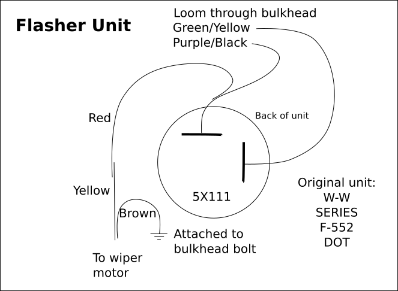
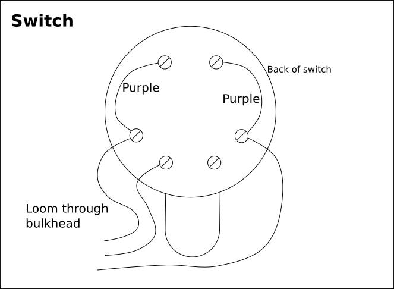
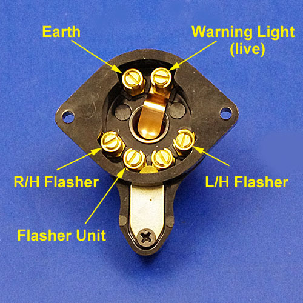
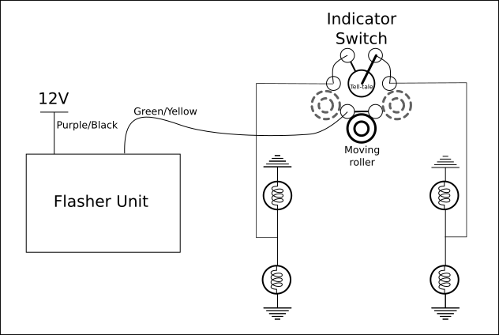
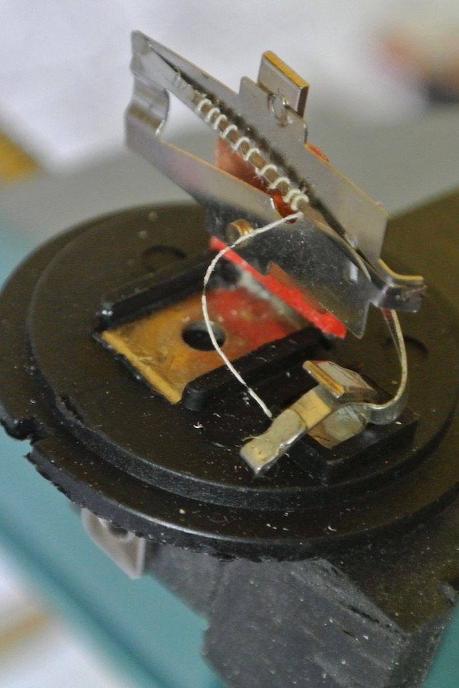
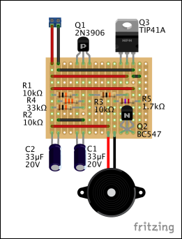
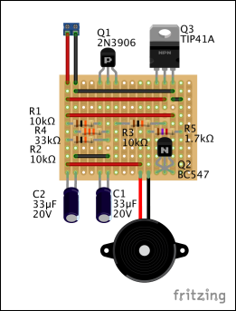
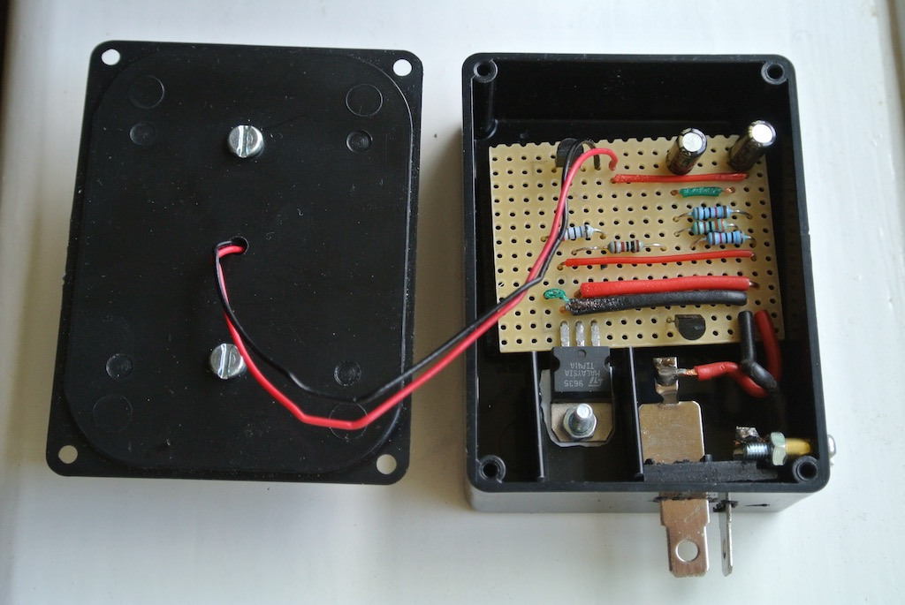

Indicators
During a Sussex Wanderers on Wednesday 11th May 2016 the indicators on the TC stopped working. Consequently I had to resort to hand signals, wondering whether other drivers would know what I was doing!
So I investigated the wiring of both the flasher unit and the indicator switch. However, I didn't find out where the wires go once they disappear into the loom.
 As you can see from this photo (obtained from somewhere on the web), the switch has a roller that, in the off (down) position, connects the lower two contacts. According to a diagram on 'From the Frame Up', these lower two connectors are internally linked. This makes sense since movement of the switch one way or the other connects the signal from the flasher unit to either the left or right set of bulbs. The front side light bulbs are dual filament, being 21/5W, although the manual lists the side lights as being 6W. One of the top contacts in the switch is connected to the bottom of the bulb in the switch and the other is connected to the case of the bulb. The way that the switch is wired on TC4985 means that the switch bulb (which is only 2.2W compared with 21W for each of the indicator bulbs) is earthed through the indicator bulbs on the 'other' side! This works because, according to my calculations, the current through the indicator bulbs (in the required direction) is 1.75A whereas the current through the bulbs on the other side (earthing the switch bulb) is only 170mA. Consequently, the latter bulbs only glow faintly.
Mechanical Flasher Unit
So I prised open the flasher unit, which I had bought from Speedy Spares last September. The photo shows the heating wire wound around the expansion strip. The end of the wire was simply crimped in the contact, but had come loose. Not really very good quality control.
Then I bared more of the end of the wire, pushed it into the contact and squeezed it with pliers. When I plugged the unit in it worked!
However, during the December 2016 Sussex Wanderers run the indicators stopped working again! When I took the unit apart again it was clear that the heating wire is melting/breaking at the point where it is crimped. I repaired it again, but it only lasted about ten flashes! So I bought another flasher unit of a similar type, but decided to investigate building an electronic version. Initially the new unit caused the off-side indicators to flash at twice the frequency of the near-side lights! I assumed that one of the bulbs had broken, but they all worked. However, after removing the front off-side bulb and filing the contacts so as to remove the 'dimples' that stopped the bulb going back in, everything seemed to work correctly!
Solid State Flasher Unit
 My first thought was to build a solid-state flasher unit using a 555 timer, which can be powered from a source of up to 15 volts. I had a couple of these chips and the necessary circuit, and the values of components to achieve the required frequency, are readily available. However, as you can see from the diagram above, the flasher unit is connected in series with the switch and the indicator lights and so does not have a stable ground. This circuit, with a MOSFET to switch the current to the indicators, uses a large capacitor (C3) in an attempt to create a virtual ground. But the voltage of this virtual ground fluctuated and the lamps only lit dimly.
My first thought was to build a solid-state flasher unit using a 555 timer, which can be powered from a source of up to 15 volts. I had a couple of these chips and the necessary circuit, and the values of components to achieve the required frequency, are readily available. However, as you can see from the diagram above, the flasher unit is connected in series with the switch and the indicator lights and so does not have a stable ground. This circuit, with a MOSFET to switch the current to the indicators, uses a large capacitor (C3) in an attempt to create a virtual ground. But the voltage of this virtual ground fluctuated and the lamps only lit dimly.
So I reverted to simpler circuit, adapted from that given on the Electronic Circuit Projects site.
The circuit, shown below, uses the time taken for a capacitor (C1) to charge through a resistor (R1), and then to discharge through resistor R3 to provide the on and off periods. Those components are combined with the transistor Q1 to make the oscillator. Transistor Q1 then causes the Darlington pair (Q2 and Q3) to switch on the indicator lights.
 

When the switch is set to indicate (either left or right), the output of the flasher unit is essentially grounded since the indicator bulbs have a resistance of only 7 Ohms compared to 43K Ohms of directly connected resistance. The voltage at the base of transistor Q1 is about 9V. So it's not until the voltage at the emitter of Q1 gets to about 9.7V that it switches on (since the PNP transistor needs the base to go low to switch the transistor on). The voltage at the emitter takes about 1s due to the 10K resistor. (To fully charge C1 takes 5RC = 5*0.33 = 1.65s.) But once Q1 is ‘on’ and the Darlington pair have been turned on, C1 starts discharging through R3 (and the three transistors) until Q1 is turned off, when the Q2 and Q3 are also turned off. The cycle then repeats.
The indicator bulbs are 21W, so each takes 21/12 = 1.75A, with a resistance of ~7 Ohms. So, when on, the two indicator bulbs on one side take 3.5 Amps. The tell-tale bulb is 2.2W and thus takes 0.183 Amps (although slightly less since it is in series with the two bulbs on the other side). So the power transistor current needs to be at least 3.5 Amps. A TIP41A has a maximum collector current of 6 Amps.
Before making the stripboard shown above I tested the circuit using a breadboard. The connecting wires used with a breadboard are 22 gauge, which is capable of taking about 7 Amps, therefore enough for this test. However, my hook-up wire will only take 1.4 A. So the two connections from +12V to the collector of the power transistor and from its emitter to the output needed to be heavier gauge wire. Similarly for the wires leading out to the spade connectors.

You can see from the photos that I used the spade connectors from an old mechanical flasher unit, with the base suitably cut down and held in place by a nut and bolt. You can also see the buzzer bolted to the lid of the box. I put a resistor in series with it so as to reduce the volume of the buzz to something more acceptable in the car. As you might be able to tell from the circuit diagram, the buzzer is on when the the indicator lights are off and vice versa.
The result is a plug-compatible unit, fixed under the dashboard with velco. The mechanical flasher unit is still in place and the wires could simply be moved across so as to use it.
© David James 2017 Last updated: 3rd June 2017